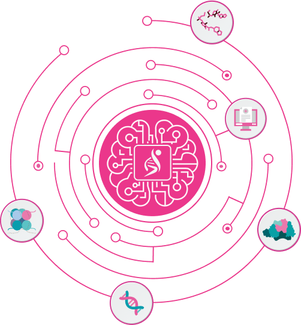
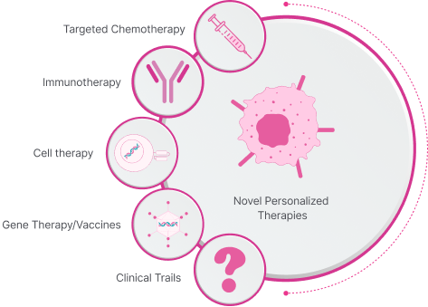
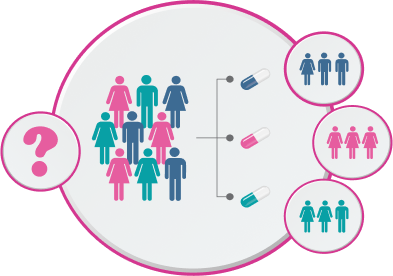

designed to revolutionize precision oncology by integrating multi-omics intelligence with clinical decision-making. It leverages advanced computational analytics to extract and interpret biomarkers from various oncology datasets, including genomics, epigenetics, proteomics, and metabolomics.

Multi-Omics Data Intelligence
• Aggregates biomarker information from genomic sequencing (NGS), epigenetic
modifications, protein expression analysis, and metabolic profiling.
• Enhances diagnostic precision by correlating molecular signatures with cancer progression
and therapeutic response.
Multi-Omics Data Intelligence
• Uses machine learning algorithms to analyze tumor profiles and predict therapy responses.
Multi-Omics Data Intelligence
• Evaluates treatment plans against global oncology standards, ensuring regulatory and
clinical best practices.
• Supports evidence-based medicine through continuous learning from global cancer data.


OncoAdvisorTM empowers clinicians with data-driven insights to improve patient outcomes, reduce treatment resistance, & optimize cancer care. By integrating electronic health records (EHR) with advanced multi-omics analytics, the platform enhances precision medicine strategies, facilitating early detection, treatment personalization, and continuous monitoring of therapy efficacy.

Guides oncologists in selecting optimal treatment strategies, including targeted chemotherapy, immunotherapy, cell therapies & gene therapy/vaccines.

Guides oncologists in selecting optimal treatment strategies, including targeted chemotherapy, immunotherapy, cell therapies & gene therapy/vaccines.